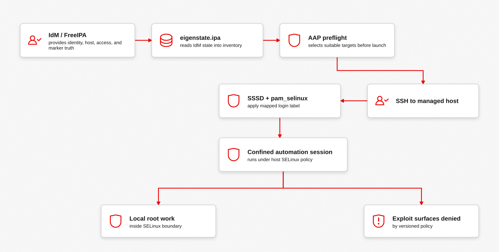
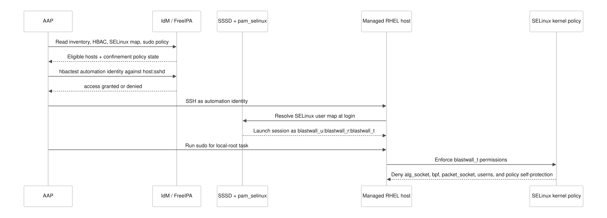
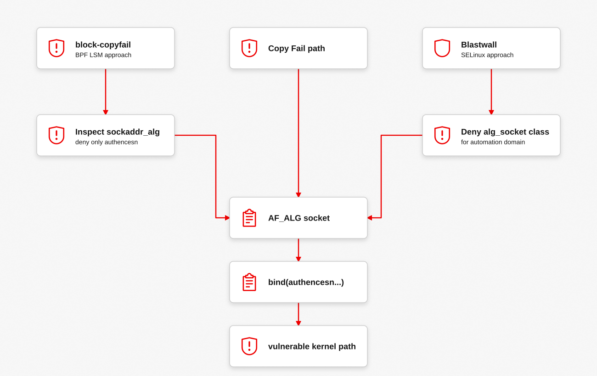

blastwall is a proof of concept for using SELinux user confinement as an exploit firewall for privileged automation. The diagrams below are the argument, not decoration: they show where this model sits beside BPF LSM precision, how it moves through RHEL operations, and where AAP should decide to run, skip, or remediate.
Recent events make the argument in Privileged Automation Security feel less theoretical. Blastwall is a concrete sketch of that concern: privileged automation should arrive constrained, observable, and policy-gated before it can touch the rest of the fleet.
Demo
The demo was recorded in Calabi, my nested-KVM lab for modeling disconnected OpenShift and support-service boundaries in a controlled environment. In this project, Calabi is the validation lab, not a Blastwall dependency. The demo shows the proof path from bastion-01: IdM service identity creation, eigenstate.ipa read-side validation, direct GSSAPI SSH probes as svc-ansible-runner, target audit evidence for AF_ALG, BPF, packet_socket, userns, and io_uring denials, and a final self-protection proof that blocks a sudo-expanded semodule breakout.
The Problem
The failure mode I am trying to avoid is simple: automation gets the same broad local shape as an operator, but it executes faster, across more hosts, and with less human friction. If that automation lands as an unconfined identity, every mistake and every exploit path starts from a position I do not want to defend.
Copy Fail is the concrete example here. Anthony Green's block-copyfail shows the precise BPF LSM answer: inspect the AF_ALG bind argument and deny the vulnerable authencesn shape. Blastwall asks a different operational question: if the risky path should be unavailable to privileged automation, can I make that part of the same SELinux, IdM, AAP, and content-delivery model RHEL operators already understand?
Why This Matters Now
The rate at which new exploit surfaces are discovered is accelerating. Agentic AI tools can now perform autonomous vulnerability research: code auditing, fuzzing, binary analysis, and exploit chain construction. These tools are compressing the timeline between "vulnerability exists" and "exploit is weaponized." What once took dedicated research teams months can now surface in days or hours.
This changes the risk calculus for automation. Every automation identity that runs unconfined is a standing invitation: when the next kernel 0-day drops, that identity already has the access, the speed, and the reach to move laterally across the entire fleet before a patch is even available. Organizations that adopt broad privileged automation without confinement are building a superhighway. High speed, high privilege, low friction, and an attacker only needs one exploit to get on the road.
The question is not whether a new kernel vulnerability will appear. It is whether your automation identities are already constrained enough that the vulnerability's blast radius is bounded before you even know the CVE number. Blastwall is designed around that assumption: confine first, deny broad exploit surfaces for automation by default, and make the confinement lifecycle fast enough to add new deny scopes as threats emerge, faster than kernel patches move through the fleet.
The Argument
I do not think FreeIPA should author SELinux policy. I want IdM to map named automation identities into SELinux users and roles that already exist on the endpoint. I also do not want AAP discovering halfway through a job that the host was never in the right confinement state.
Local Policy
Managed RHEL hosts carry a versioned policy that defines blastwall_u, blastwall_r, and the confined automation domain.
IdM Mapping
IdM maps selected automation identities into that SELinux user through HBAC-linked policy and scoped sudo.
AAP Gate
AAP reads IdM state with eigenstate.ipa before running and fails closed on unsuitable hosts.



Why I Would Build This
I would build this because the logistics matter. In a RHEL automation estate, a versioned SELinux policy RPM is often easier to stage, promote, audit, and roll back than a new set of dynamically attached probes. That does not make SELinux more precise than BPF LSM. It makes the mitigation fit the machinery already wrapped around RHEL operations.
The point is not to replace kernel patches. The point is to make privileged automation start constrained while the real fix moves through the fleet. If the exploit can be mitigated by denying a broad surface for automation identities, I want that denial to have an artifact name, a rollout state, and an inventory-visible coverage claim.
-
1
Convert the exploit into managed policy
- New exploit surface
- Update Blastwall policy
-
2
Give the mitigation an artifact lifecycle
- Build/sign policy RPM
- Publish via Satellite or content pipeline
-
3
Roll out and prove host-local enforcement
- AAP rollout workflow
- Local verification: expected denial works
-
4
Feed verified state back into automation
- Update IdM host marker
- Sync
eigenstate.ipainventory - AAP preflight selects current hosts
How It Scales
That turns emergency mitigation into ordinary operational state. Hosts are not merely patched or unpatched. For a given job, they are suitable or unsuitable based on identity mapping, HBAC, sudo policy, local SELinux enforcement, and the coverage markers AAP can see before it touches the endpoint.
-
1
Scope the new surface
- New exploit surface
- Define enforceable scope: class, permission, type, or transition
-
2
Productize the policy change
- Add Blastwall policy scope
- Review impact: normal automation still works
- Bump policy version
-
3
Ship coverage through normal RHEL operations
- Build policy RPM/module
- Roll out to managed hosts
-
4
Make coverage selectable before jobs run
- Update IdM host marker
- AAP inventory sync
- Preflight selects hosts with required coverage
-
1
Host-local proof
- Policy deployment workflow
- Install/update
blastwall-selinuxRPM - Verify local policy: expected denials are observable
-
2
Inventory-visible claim
- Update IdM host description marker
- Sync
eigenstate.ipa.idminventory
-
3
AAP target decision
Marker matches required policy?Yes
blastwall_policy_current
preferred candidatesNo
blastwall_policy_stale
report/remediate

Runtime Enforcement
The final decision still happens on the host. The point of the IdM and AAP work is to make sure the session arrives in the right SELinux user and role before local root work begins.

The Tradeoff
BPF LSM is the precision tool. It can inspect kernel hook arguments and preserve unrelated AF_ALG use. Blastwall is the identity, policy, and delivery model. It blocks a broader SELinux surface for a narrower subject: privileged automation mapped into blastwall_u.
That tradeoff is often acceptable for automation. Many jobs do not need AF_ALG, raw packet sockets, BPF, user namespace creation, or io_uring. Blocking those surfaces for automation identities is part of the point.

Repository Layout
| Path | Purpose |
|---|---|
policy/ | SELinux reference-policy module and CIL deny rule. |
idm/ | IdM group, hostgroup, HBAC, sudo, and SELinux user-map object model. |
inventory/ | eigenstate.ipa.idm inventory source for AAP. |
playbooks/ | Preflight, deployment, and verification playbooks. |
poc-calabi/ | Calabi lab exercise for replaying the proof path after watching the demo. |